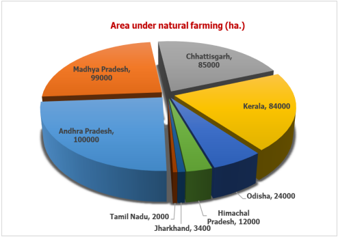

Vrikshayurveda: Science of Plant Life
Ancient India possessed a profound understanding of the relationship between microbes and agriculture, documented in texts like Vrikshayurveda by Surapala. This ancient science recognized that the health of a plant depends on the vitality of the soil it grows in.
They understood that the soil is not just "dirt" but a living, breathing ecosystem. By applying traditional knowledge, they managed soil fertility and protected crops from pests and diseases using microbial-rich organic inputs.


Kunapajala & Panchagavya
Ancient farmers used Kunapajala, a fermented liquid manure made from plant and animal products, which acted as a powerful microbial inoculant. This ancient "bio-fertilizer" stimulated the growth of beneficial microorganisms in the soil.
Similarly, Panchagavya—a mixture of five products from the cow—was used both as a nutrient source and a biological pest repellent. Modern research confirms that these traditional mixtures are rich in beneficial bacteria and fungi that promote lush agricultural growth.
Modern Relevance: Natural Farming in India
The ancient principles of Vrikshayurveda and microbiological soil health are being revitalized across India today. Modern data shows a significant increase in the area under natural farming, as seen in the growth across various Indian states.
By transitioning back to these time-tested, chemical-free methods, Indian agriculture is restoring soil biodiversity and ensuring sustainable food security for future generations.
